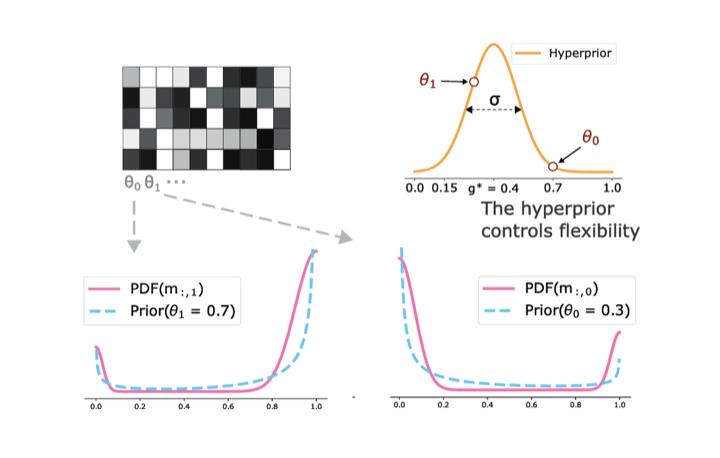
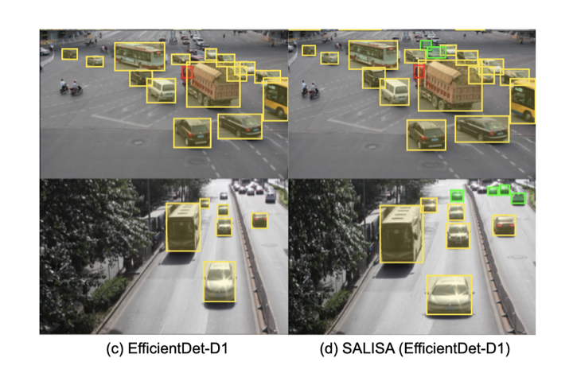
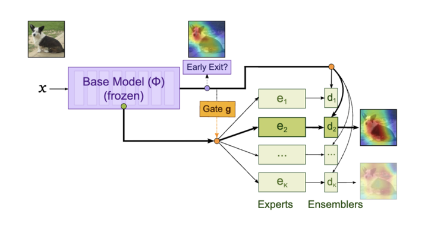
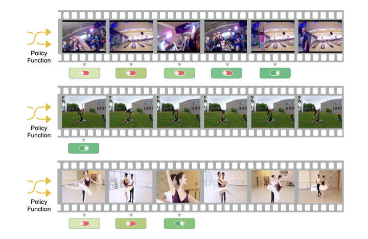
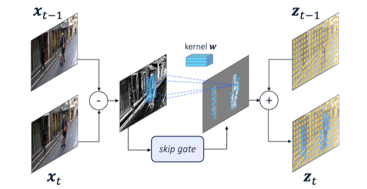
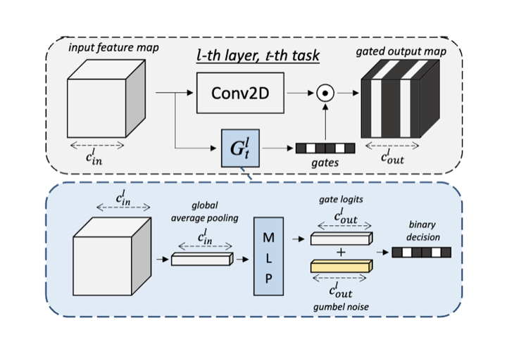

Selected publications
Research projects
Work on efficient and capable language models, conditional computation, on-device inference, multi-task learning, and computer vision.

Dirichlet-Prior Shaping
Guiding expert specialization in MoEs via Dirichlet-Prior Shaping (DPSL). DPSL is a powerful tool to instill a wide array of desired statistical properties into the router's behavior.

Reasoning on the Edge
Reasoning in small LLMs using LoRA adapters, combined with supervised fine-tuning and RL-based Budget forcing.

KaVa: Latent Reasoning
Distilling knowledge from a compressed KV-cache of a teacher into a latent-reasoning student.


InterroGate for MTL
Learning to share, specialize, and prune representations for Multi-task Learning.

Scalarization for MTL
Scalarization for Multi-Task and Multi-Domain Learning at scale.



Single-gated MoE
Single-gate Mixture of Experts (MoE) with early exiting for convolutional architectures.



Channel Gating for Continual Learning
Conditional channel gated networks for task-aware continual learning.